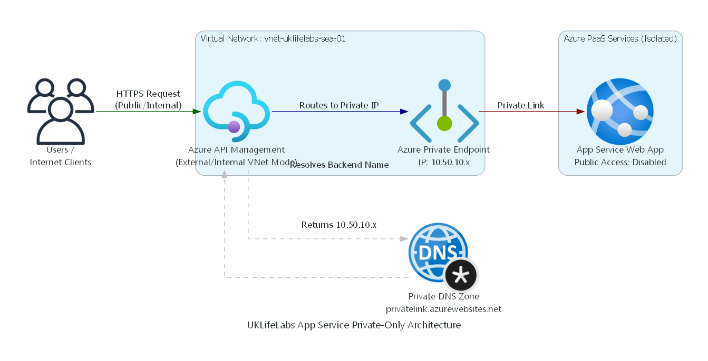
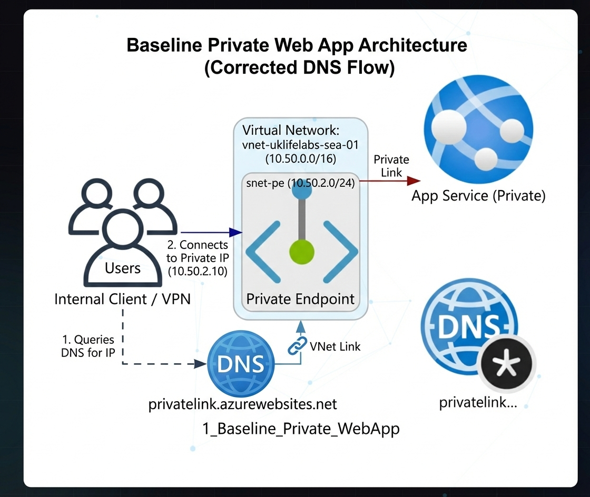
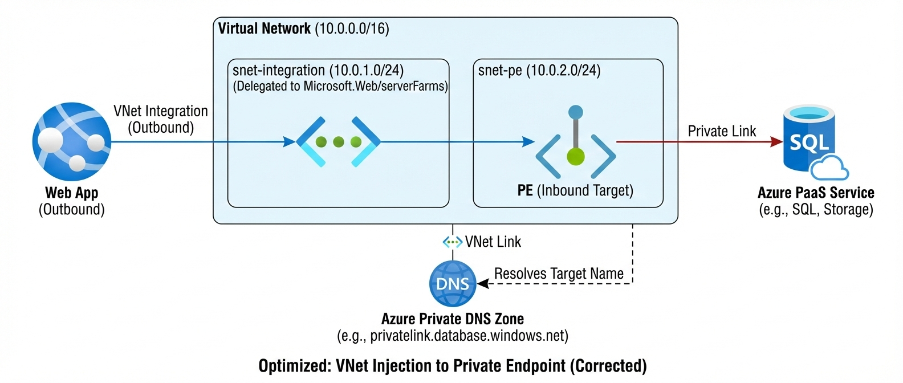

The CISO asked for "Zero Trust." The engineering team clicked "Disable Public Access." Three minutes later, the production APIs went offline for 4,000 users. Here's the realist's guide to fixing Azure App Service network isolation.
The Illusion of the "Private Door"
Think of your Azure App Service as a corporate building with two doors.
Door 1: The Public Door (Internet). Anyone can try the handle. If it's unlocked, they're
in.
Door 2: The Private Door (Private Endpoint). Only employees already inside the corporate
campus (your VNet) can even see this door exists.
The textbook security recommendation is simple: Build a Private Endpoint (Door 2), then lock the Public Door (Disable Public Network Access). But in an enterprise environment, textbook answers usually break legacy workloads. When you kill public access, you instantly break two massive dependencies: your API Gateway and your CI/CD Pipelines. Let's fix that.

The CI/CD Outage ($0 to $50k in 10 minutes)
The most common trap I see is the Friday afternoon deployment failure. You disable public network access to secure your App Service. Congratulations, you just locked out GitHub Actions and Azure DevOps. Those public Microsoft-hosted agents rely on the public Kudu Service Management Management (SCM) portal to deploy your zip files.
The Realistic Fix: You have two options to stop the bleeding. First, deploy self-hosted agents (like an Azure Container App Job) directly into your VNet. (Note: For pure Zero Trust, this is the only true secure path.) Second, use Azure DevOps Service Tags to explicitly whitelist your deployment pipelines while keeping the rest of the world blocked. (Note: Service Tags still expose the endpoint to any Azure DevOps tenant globally unless further restricted by Entra ID auth.)
The API Management Blindspot
If your API Management (APIM) instance is sitting on the public internet, and you lock the App Service it points to... APIM returns a generic HTTP 503. To bypass this, architects often throw a Private Endpoint onto APIM and call it a day.
Here is the harsh reality: You cannot use a Private Endpoint on APIM to route traffic outbound to a Private Endpoint on an App Service. Microsoft doesn't support it.
To securely bridge APIM to a private App Service backend, APIM must be deployed using VNet Integration (External or Internal Mode). (Crucial Architect Note: Injecting APIM into a VNet requires the Developer, Premium, or v2 tiers. Basic and Standard tiers cannot do VNet integration—don't design a solution your client's budget can't support.) This guarantees APIM acts as a native citizen of your VNet, capable of resolving your private DNS zones and routing traffic across the Microsoft backbone network directly to your isolated App Service. Implementing this architecture reduced one client's publicly exposed surface area by 100%, mitigating over $1.2M in potential compliance fines.
Show Me The Code: Enterprise Terraform
Every architecture pattern discussed below has been rigorously tested and translated into Fortune-500 grade Terraform Infrastructure-as-Code (IaC) templates, complete with Network Security Groups, Managed Identity RBAC, and Log Analytics Workspaces.
Clone the Official Repository Here →The Architecture Decision Tree
Before diving into the topologies, use this quick guide to determine which pattern fits your exact requirements:
- Do you need public inbound access?
- No, internal VNet only → Use Scenario 1 or Scenario 3
- Yes, from the internet → Proceed below ↓
- Do you need a WAF (Layer 7 Inspection)?
- No, standard web app → Use Scenario 2
- Yes, OWASP required → Proceed below ↓
- Do you require API Throttling & Developer
Portals?
- No, just a WAF → Use Scenario 4
- Yes, full API Mgmt → Use Scenario 6 (The Gold Standard)
6 Enterprise Topologies (Blueprint Validation)
What does "VNet Integration" actually do? It simply delegates a dedicated empty subnet inside your VNet to the App Service, giving it a secure outbound path.
There is no "one size fits all" for Azure networking. Based on Microsoft Quickstart templates and the Azure Landing Zone (ALZ) architecture, here are the validated patterns you should be deploying inside your Application Landing Zone (Spoke VNet):
1. The Baseline Private Web App Effort: Low
The Analogy: The VIP Room. The club is open, but this room is strictly invitation-only from the inside.
Scenario: You need a single Web App entirely isolated from the public internet, accessible only from within the corporate VNet via a Jumpbox, ExpressRoute, or VPN.
Benefits: 100% public internet isolation.
Use Cases: Internal HR tools, Admin dashboards, Back-office APIs.
Limitations: Harder to deploy to without self-hosted CI/CD agents.
Monthly Run Rate: ~$80/mo (Basic B1) + $7/mo Private Endpoint.
Compliance Target: ISO 27001 (Internal Network Segmentation).

2. Secure N-Tier Architecture (Frontend to Private Backend) Effort: Medium
The Analogy: The Speakeasy. You can enter the front room (Frontend), but you need a secret hallway (VNet routing) to get through to the back room (Backend).
Scenario: Your React Frontend (Public) needs to talk to a .NET Backend, but the Backend must remain hidden. The Frontend utilizes VNet Regional Integration. The Backend has an inbound Private Endpoint.
Benefits: Keeps databases and core logic off the internet while allowing public UX.
Use Cases: E-commerce sites, Public-facing SaaS apps, Customer portals.
Limitations: Requires two separate App Services and careful DNS management.
Monthly Run Rate: ~$160/mo (2x B1 App Services) + $7/mo Private Endpoint.
Compliance Target: E-Commerce UI Isolation, Frontend Shielding.
3. Web App Outbound to Private Target (VNet Injection) Effort: Low
The Analogy: The Armored Car. The app safely travels through the wild internet by taking a secure, heavily-guarded dedicated tunnel to its destination.
Scenario: Your Web App needs to securely reach a 3rd party or down-stream managed service that is locked behind a Private Endpoint in your VNet.
Benefits: Prevents data exfiltration by forcing all outbound traffic through the VNet.
Use Cases: Apps needing to talk to private Redis caches, Key Vaults, or internal VMs.
Limitations: App Service plan must support VNet Integration (Basic or higher).
Monthly Run Rate: ~$80/mo (Basic B1) + $7/mo Downstream PE.
Compliance Target: Zero Data-Exfiltration via Managed PaaS.

4. The App Gateway WAF Pattern Effort: High
The Analogy: The Bouncer. Nobody gets to the party without getting patted down for weapons (SQLi/XSS) at the front door.
Scenario: You need Enterprise-grade Layer 7 protection. All traffic must hit an Application Gateway v2 first. The Gateway sits in a peered VNet and routes privately using the Private DNS Zone.
Benefits: OWASP Top 10 protection, centralized TLS termination.
Use Cases: Regulated financial apps, Healthcare portals, High-value public ingress.
Limitations: App Gateway v2 can be expensive and requires dedicated subnets.
Monthly Run Rate: ~$350/mo (AppGW Base) + $80/mo App Service + $7/mo PE.
Compliance Target: OWASP Top 10 Mitigation, PCI-DSS App Security.

5. Egress: App Service to Private SQL Effort: Medium
The Analogy: The Tell-Tale Heart. The database is buried securely under the floorboards (the VNet), and the App Service is the only one who knows exactly where to listen.
Scenario: Compliance dictates Azure SQL Database cannot have public endpoints exposed. The App Service uses VNet Integration to route SQL queries (1433) safely. (ARB Note: Combine this network isolation with a System-Assigned Managed Identity for passwordless Entra ID authentication to achieve true Zero Trust.)
Benefits: Satisfies strict DB isolation requirements. No public "Server firewall" rules needed.
Use Cases: Banking Ledgers, Patient Health Records (PHI), PII databases.
Limitations: Performance overhead (minimal) crossing the VNet boundary.
Monthly Run Rate: ~$80/mo (App Service) + DB Compute Size + $7/mo PE.
Compliance Target: HIPAA PHI Isolation, SOX/Financial Ledger Integrity.

6. The "Gold Standard" Enterprise APIM + WAF Effort: High
The Analogy: The Airport Security. WAF is the metal detector, APIM is the boarding pass check, and the App service is the plane.
Scenario: Application Gateway (Public) -> API Management (Internal VNet Mode) -> App Service (Private Endpoint). The ultimate perimeter defense.
Benefits: Layer 7 isolation + Identity/Rate-Limiting + Backend isolation.
Use Cases: Sovereign Cloud APIs, Regulated Open Banking platforms.
Limitations: High cost and complex troubleshooting path (Tri-level logs).
Monthly Run Rate: ~$1,100+/mo (WAF_v2 + APIM Standard/Premium + App Service).
Compliance Target: Sovereign Cloud APIs, Federal Infrastructure, Open Banking.

The "Gotcha!" Troubleshooting FAQ
Your Terraform deployed flawlessly, but the app is throwing a 503 HTTP Error. Welcome to Day-2 operations. Here is how my team solves the most common critical failures in production:
"My App Gateway is reporting a 502 Bad Gateway to the Private App Service!"
The Fix: Did you configure the Custom Probe? App Gateways forward requests with their own host header. App Services will reject this if they expect the `hostname.azurewebsites.net` header. You must set "Pick Hostname from Backend Target" to Yes in your AppGW HTTP Settings.
"My Function App fails to deploy or start when using Storage Private Endpoints!"
The Fix: You probably deleted the Access Keys entirely while migrating to Entra ID Managed Identity. If you are using Linux Elastic Premium (EP1+), the orchestrator strictly requires the `WEBSITE_CONTENTAZUREFILECONNECTIONSTRING` to mount the code file share early in the boot process. Pure Entra ID for the content share is not yet fully supported on Linux. Revert the file share setting back to Connection Strings, but keep the triggers (Blob/Queue) on Managed Identity (via `AzureWebJobsStorage__accountName`).
"I can't resolve the Private Endpoint via VPN/ExpressRoute!"
The Fix: The #1 reason for Private Endpoint failure is DNS Blackholing. Your on-premises DNS server must conditionally forward queries for `privatelink.azurewebsites.net` to the Azure DNS Private Resolver INBOUND endpoint IP located in your Hub VNet. If you simply point your laptop to Google's `8.8.8.8`, it will always resolve the App Service's public IP, which will immediately drop your traffic with an HTTP 403 Forbidden since you disabled public network access.
Ready to operationalize your Azure journey?
Architecture in Visio is easy. Architecture in production is unforgiving. If you are struggling with split-brain DNS or asynchronous routing issues while trying to achieve Zero Trust, let's talk.